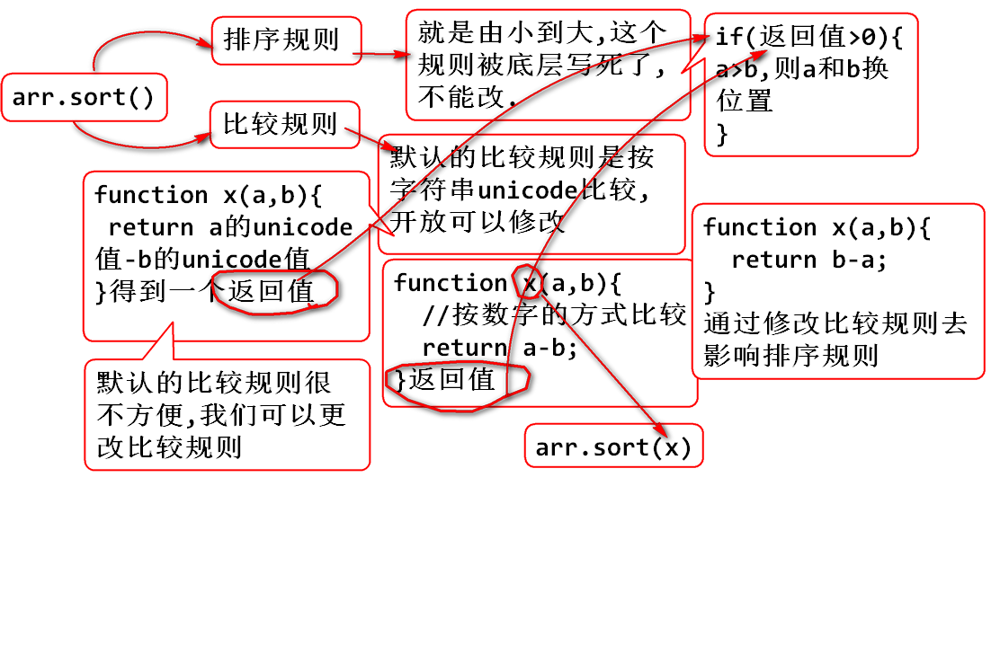

- n(正整数)的阶乘 1*2*3...*n
- 0的阶乘,固定为1
- 负数,小数没有阶乘
<p>n(正整数)的阶乘 1*2*3...*n</p>
<p>0的阶乘,固定为1</p>
<p>负数,小数没有阶乘</p>
<input type="text" id="num">
<input type="button" value="阶乘"
onclick="cal();">
<span id="result"></span>
<script type="text/javascript">
function cal(){
//1.获取文本框中的值
var input=document.getElementById("num");
var num=input.value;
//2.获取span对象
var span=document.getElementById("result");
//3.判断num是不是数字
if(isNaN(num)){
//不是数字,span中提示
span.innerHTML="请输入数字";
}else{
//是数字,先去除小数点
num=parseInt(num);
//把去除完小数点的整数,放回到文本框中去
input.value=num;
if(num<0){
span.innerHTML="负数没有阶乘";
}else if(num==0){
span.innerHTML="0的阶乘固定为1";
}else{
//计算正整数的阶乘
var res=1;
for(var i=num;i;i--){
res*=i;
}
span.innerHTML=res;
}
}
}
</script>
var str1="hello world";
var str2=new String("hello world");
str.toLowerCase();
str.toUpperCase();
str.charAt(index);
var str="javascript网页教程";
var str1=str.charAt(12);
str.indexOf("");
str.lastIndexOf("");
var str="javascript网页教程";
var index=str.indexOf("a");
var index=str.lastIndexOf("a");
str.substring(star,[end]);
var str="abcdefghi";
//包头不包尾
var str1=str.substring(2,4);
str.replace(str1,str2);
str1--要找到的字符串
str2--新的字符串
返回值是替换后的字符串
var str="abcde";
var str1=str.replace("cd","aaaa");
str.split(str1,[length]);
str1--分割用的子字符串
length,指定返回数组的最大长度,可省略
返回值为,分割之后的字符串数组
var str="一,二,三,四,五,六,日";
var strArray=str.split(",",5);

<ul id="ul">
</ul>
<script type="text/javascript">
var oUl=document.getElementById("ul");
//假设从服务器获取了一组数据
var contents=["天气预报","奇人异事","法制社会","寻人启事","明星趣事"];
//制作一个string的模板,使用[content]占位
var str="<li><span><a>[content]</a></span></li>";
for(var i=0;i<contents.length;i++){
//替换模板中的[content]
oUl.innerHTML+=str.replace("[content]",contents[i]);
}
//console.log(oUl.innerHTML);
</script>
toFixed(length):把number转换为字符串,保留小数点后一定的位数.如果必要,该数字会被四舍五入,也可以用0补足位数
var arr=["打一顿","不多于",12.3,true];
var arr1=new Array();
arr1[0]="123";
arr1.push(23);
两种创建方式,不管哪一种,创建出来,都是object类型
数组常用api
arr.reverse() // 反转输出

var arr=[5,12,3,14,26,1];
//var arr=["a","ab","b","c","bd","d"];
//console.log(arr.sort());//1,3,5,12,14,26
//修改比较规则,按照数字大小比较
/* function x(a,b){
return b-a;
} */
arr.sort(function(a,b){
return a-b;
});
console.log(Math.round(4.56));
Math.floor(4.5);
创建客户机当前时间
var d1=new Date();
创建指定时间的date对象(指定时间一般源于服务器)
var d2=new Date("2016/12/12 12:12:12");
读写时间的毫秒数
getTime()读 setTime()写
d1.getFullYear();//获取年
d1.getMonth();//获取月,需要+1
d1.getDate();//月的天
d1.getDay();//周的天
d1.getHours();//获得小时
d1.getMinutes();//分钟
d1.getSeconds();//秒
d1.toString();
d1.toLocaleTimeString();
d1.toLocaleDateString();
. 任意字符
\w 任意字母,数字,下划线
\s 任意空白字符
\d 任意数字
^ 字符串开头
$ 字符串结束
- 直接创建
var reg=/正则表达式/[模式]
var reg=/no/g;
- 创建对象
var reg=new RegExp(正则表达式,[模式]);
var reg=new RegExp('\s\d');//此句有坑
- 全局模式,设定当前匹配为全局,g
- 设置当前匹配模式忽略大小写,i
reg.exec(str);
//从str中找到匹配正则的子串
//普通模式下,返回第一个符合要求的子串
//全局模式下,第n次执行,返回符合要求的第n个子串
var str="you can you up,no can no bi bi";
var reg=/no/g;
//reg.exec(str);
//从str中找到匹配正则的子串
//普通模式下,返回第一个符合要求的子串
//全局模式下,第n次执行,返回符合要求的第n个子串
console.log(reg.exec(str));
console.log(reg.exec(str));
console.log(reg.exec(str));
console.log(reg.exec(str));
//reg.test(str);
//判断str中是否 包含与reg匹配的子串
console.log(reg.test(str));
1. str.replace(reg,"");
将str中的与reg匹配的所有子串都替换成目标子串
var str="you can you up,no can no bi bi";
var reg=/no/g;
var str1=str.replace(reg,"bu");
console.log(str1);
2. str.match(reg);
从str中找出和reg匹配的子串,返回值是数组
var str="you can you up,no can no bi bi";
var reg=/no/g;
//var str1=str.replace(reg,"bu");
//console.log(str1);
console.log(str.match(reg));
3. str.search(reg);
从str中找出和reg匹配的第一个子串的索引
console.log(str.search(reg));